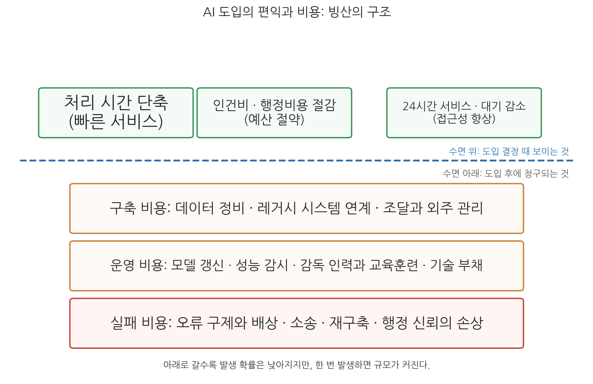
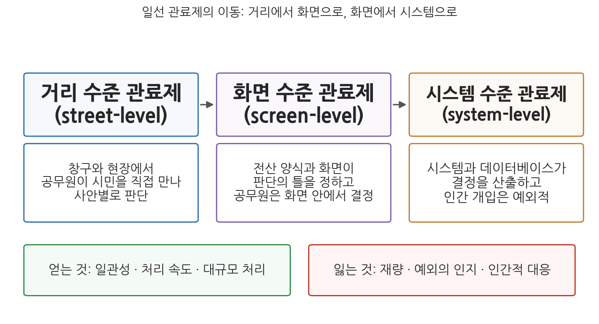

2주차 2차시. AI와 효율성 (2): 효율의 재검토
로보뎃은 조잡하고 잔인한 장치였으며, 공정하지도 합법적이지도 않았다. (호주 로보뎃 왕립위원회 최종보고서, 2023)
이 장에서 배우는 것
2015년, 호주 정부는 복지 급여의 과지급을 환수하는 업무를 자동화하겠다고 발표했다. 그때까지는 국세청의 소득 자료와 복지 급여 기록이 어긋나는 사례를 공무원이 하나하나 검토해 채무 여부를 판정했는데, 이 검토 단계를 없애고 시스템이 자동으로 채무 통지서를 발송하게 한 것이다. 처리 건수는 연간 2만 건에서 수십만 건으로 뛰었고, 정부는 수십억 호주달러의 재정 회수를 공언했다. 투입은 줄고 산출은 늘었으니, 1차시의 언어로 말하면 기술적 효율성의 극적인 개선처럼 보였다. 그러나 이 시스템, 훗날 "로보뎃(Robodebt)"이라 불린 이 자동화의 실제 결말은 달랐다. 47만 건의 채무가 잘못 산정되었고, 법원은 산정 방식이 위법하다고 판단했으며, 정부는 2020년 18억 호주달러 규모의 환급·배상에 합의했다. 2023년 왕립위원회는 이 장 첫머리의 문장으로 보고서를 요약했고, 2025년 9월에는 연방법원이 12만 5천여 명에 대한 4억 7,500만 호주달러의 추가 배상을 승인했다. 효율을 위해 도입된 시스템이 한 나라 행정사에서 손꼽히는 비용과 신뢰 손상을 남긴 것이다.
1차시가 효율의 약속을 액면 그대로 이해하는 시간이었다면, 이번 차시는 그 약속을 세 방향에서 재검토하는 시간이다. 첫째, 약속은 실제로 얼마나 지켜지는가(실증 증거). 둘째, 약속의 가격표에는 무엇이 빠져 있는가(숨은 비용). 셋째, 효율을 얻는 대신 무엇을 잃을 수 있는가(다른 가치와의 긴장). 구체적으로 다음을 배운다.
- 효율성 개선의 실증 증거: 정부의 대규모 실험과 학술 연구가 말해 주는 것과 말해 주지 않는 것
- 도입·운영의 숨은 비용: 구축 비용, 운영 비용, 그리고 실패 비용
- 자동화와 일선 관료의 재량: 거리 수준에서 시스템 수준으로의 이동이 효율에 되돌아오는 방식
- 대리인 이론, 관료제 이론, 제도 이론으로 본 AI 효율의 역설
- 효율 중심 도입의 함정과, 함정을 피하는 설계의 단서
이 장은 하나의 질문을 따라 전개된다. "AI 효율의 약속은 어디까지 증명되었고, 그 대가는 무엇인가?"
2.1 효율 개선의 실증 증거를 정부 실험과 학술 연구에서 확인한다 → 2.2 가시적 편익 뒤의 숨은 비용(구축 · 운영 · 실패)을 실패 사례와 함께 본다 → 2.3 재량 · 대리인 · 관료제 · 제도 이론의 렌즈로 효율과 다른 가치의 긴장을 분석한다 → 2.4 효율 중심 도입의 함정을 정리하고 대안의 단서를 찾는다.
2.1 효율성 개선의 실증 증거
정부가 직접 실험하다
1차시 말미에서 지적했듯, 도입 기관의 자체 발표와 독립적 증거는 구별해야 한다. 다행히 최근에는 정부가 스스로 통제된 실험을 하고 그 결과를 공개하는 사례가 늘고 있다. 가장 규모가 큰 것은 영국 정부디지털서비스(GDS)가 2024년 9월 말부터 12월 말까지 12개 정부 기관의 공무원 2만 명을 대상으로 진행한 생성형 AI 업무 도구(마이크로소프트 365 코파일럿) 실험이다. 2025년 6월 공개된 결과 보고서에 따르면, 참여자들은 문서 초안 작성, 회의 요약, 정보 검색 같은 일상 업무에서 하루 평균 26분을 절약했다고 보고했다. 연간으로 환산하면 1인당 약 2주 분량의 근무시간이다. 절감 효과는 직급과 직종에 걸쳐 비교적 고르게 나타났고, 참여자의 82%는 도구가 없던 이전 방식으로 돌아가고 싶지 않다고 답했다. 영국 고용연금부(DWP)가 별도로 수행한 평가에서도 유사한 방향의 결과가 확인되었다.
호주의 결과는 좀 더 조심스럽다. 호주 정부는 2024년 상반기 60여 개 연방기관 공무원 7,600명을 대상으로 같은 도구의 전 정부 시험 도입을 실시했는데, 요약과 검색 업무에서 상당한 시간 절감이 보고된 한편, 만만치 않은 반대 급부도 함께 기록되었다. 참여자 중 도구를 매일 사용한 사람은 3분의 1에 그쳤고, 일부는 AI 산출물의 오류를 확인하느라 문서 전체를 다시 읽어야 해서 절감 효과가 상쇄되었다고 답했으며, 데이터 권한 관리가 허술한 상태에서 민감 정보에 대한 부적절한 접근이 발생하는 문제도 드러났다. 그럼에도 86%는 계속 사용하기를 원했다. 요컨대 두 나라의 실험은 "시간 절감은 실재하되, 그 크기는 업무 유형에 따라 다르고, 검증 비용과 정보 관리 비용이 이득의 일부를 도로 가져간다"는 그림을 그린다.
학술 연구의 증거
통제된 학술 실험들도 방향은 비슷하다. 노이와 장(Noy & Zhang, 2023)은 『사이언스』에 실린 실험에서 보도자료, 분석 보고서 같은 중급 전문 문서 작성 과제에 챗GPT를 제공했을 때 작성 시간이 약 40% 줄고 산출물 품질 평가는 18% 오른다는 것을 보였다. 브리뇰프슨, 리와 레이먼드(Brynjolfsson, Li & Raymond, 2025)는 대기업 고객 상담 부서에 도입된 생성형 AI 지원 도구의 효과를 분석해 상담사의 시간당 처리 건수가 평균 15% 늘었고, 특히 경력이 짧은 상담사에서 개선 폭이 가장 컸음을 보고했다. 상담과 문서 작성이 공공부문 사무의 큰 부분을 차지한다는 점에서, 이 결과들은 정부 업무에도 시사점이 있다.
그러나 증거를 읽을 때는 세 가지 한계를 함께 보아야 한다. 첫째, 위 연구들이 측정한 것은 대부분 과업 수준의 시간 절감이다. 개별 과업이 빨라지는 것과 조직 전체의 효율이 오르는 것은 다르다. 절약된 26분이 더 가치 있는 업무로 갔는지, 아니면 더 많은 회의와 더 긴 보고서로 흡수되었는지는 아직 잘 측정되지 않았다. 둘째, 효과는 업무 유형에 따라 크게 다르다. 정형적 문서 작업에서는 크고, 판단과 책임이 걸린 업무에서는 작거나 확인되지 않았다. 셋째, 행정 특유의 제약이 있다. 민간 콜센터는 오답의 비용을 고객 불만으로 치르지만, 행정의 오답은 권리 침해와 소송으로 돌아온다. 그래서 공공부문의 검증 비용은 구조적으로 민간보다 크다.
영국 실험의 26분은 스톱워치로 잰 값이 아니라 참여자가 설문에 답한 자기보고(self-report) 값이다. 자기보고는 대규모 측정을 가능하게 하지만, 새 도구에 대한 호감이 응답을 부풀리는 낙관 편향에서 자유롭지 않다. 호주 실험에서 "절감했다"는 응답과 "검증하느라 도로 썼다"는 응답이 공존한 것도 같은 맥락이다. 성과 수치를 볼 때는 항상 물어야 한다. 누가, 무엇을, 어떻게 재서 나온 숫자인가. 이 물음은 8주차(정책평가와 AI)에서 증거기반 정책의 문제로 다시 만난다.
정리하면, 2026년 현재까지의 증거는 이렇게 요약할 수 있다. AI에 의한 효율 개선은 실재하며 특히 정형적 정보 처리 업무에서 잘 확인된다. 그러나 그 크기는 약속만큼 균일하지 않고, 측정 방식에 민감하며, 검증과 감독이라는 새 비용을 동반한다. 그리고 이것은 어디까지나 "성공적으로 운영되는 경우"의 이야기다. 이제 가격표의 뒷면을 보자.
2.2 도입·운영의 숨은 비용
빙산의 구조
AI 도입의 편익은 도입을 결정하는 시점에 잘 보인다. 처리 시간 단축, 인건비 절감, 24시간 서비스는 보도자료와 예산 요구서에 적히는 항목들이다. 반면 비용의 상당 부분은 도입 이후에, 그것도 눈에 잘 띄지 않는 형태로 청구된다. 그림 2-3이 이 구조를 빙산에 비유해 보여 준다.

그림 2-3을 읽는 법은 이렇다. 수면 위의 상자들은 도입 결정 때 보이는 편익이고, 수면 아래의 세 층은 도입 후에 차례로 청구되는 비용이다. 아래로 갈수록 발생 확률은 낮아지지만 한 번 발생하면 규모가 커진다. 이 그림에서 알 수 있는 것은, AI 도입의 경제성 평가가 수면 위만 세는 순간 체계적으로 낙관에 기운다는 점이다.
첫째 층은 구축 비용이다. AI는 데이터를 먹고 사는데, 정부 데이터는 부처별로 흩어져 있고 형식이 제각각이며 품질이 고르지 않다. 데이터를 정비하고, 수십 년 된 레거시 시스템과 연계하고, 외부 업체와의 조달·계약을 관리하는 비용은 모델 자체의 가격보다 큰 경우가 많다. 둘째 층은 운영 비용이다. 기계학습 모형은 한 번 만들면 끝나는 소프트웨어가 아니다. 세상이 변하면 데이터의 분포가 변하고 모형의 성능은 조용히 낮아지므로, 지속적인 성능 감시와 재학습이 필요하다. 여기에 시스템을 감독할 인력의 확보와 교육훈련, 그리고 급하게 구축한 시스템일수록 쌓이는 기술 부채(technical debt)의 상환이 더해진다. 셋째 층이 이 절의 주인공, 실패 비용이다. 잘못된 결정의 구제와 배상, 소송, 시스템 재구축, 그리고 돈으로 환산하기 어려운 행정 신뢰의 손상이다. 실패 비용이 어디까지 커질 수 있는지는 아래 세 사례가 보여 준다.
실패 사례 읽기
호주 정부는 2016년부터 복지 급여 과지급 환수 업무를 자동화했다. 핵심은 "소득 평균화(income averaging)"였다. 국세청이 보유한 연간 소득을 2주 단위로 균등하게 나눈 값을 실제의 격주 소득으로 간주해 급여 수급 요건과 대조하고, 어긋나면 자동으로 채무 통지서를 보냈다. 소득이 불규칙한 비정규 노동자들은 실제로는 정당하게 급여를 받은 기간에 대해서도 채무자가 되었고, 입증 책임은 시민에게 떠넘겨졌다. 항의가 이어졌지만 시스템은 4년 가까이 유지되었다. 2019년 연방법원은 소득 평균화에 기반한 채무 산정이 위법하다고 판단했고, 정부는 2020년 약 47만 건의 채무에 대해 환급과 취소를 포함한 18억 호주달러 규모의 집단소송 합의에 이르렀다. 2023년 왕립위원회 최종보고서는 이 제도를 "조잡하고 잔인한 장치이며 공정하지도 합법적이지도 않았다"고 결론짓고 57개 항의 권고를 냈으며, 관련 고위 공직자들은 2024년 공직윤리 조사에서 징계를 받았다. 2025년 9월에는 연방법원이 피해자 12만 5천여 명에 대한 4억 7,500만 호주달러의 추가 배상(비용 포함 총 5억 4,850만 호주달러)을 승인했다. 호주 역사상 최대 규모의 집단소송 배상이다. (출처: 호주 로보뎃 왕립위원회, 2023; 호주 연방법원 승인 보도, 2025년 9월)
로보뎃이 보여 주는 것은 세 가지다. 첫째, 이 실패는 기술의 오작동이 아니라 설계의 문제였다. 시스템은 설계된 대로 정확하게 작동했다. 문제는 "연 소득을 균등 분할해도 된다"는 설계 가정 자체가 틀렸고 위법했다는 데 있다. 둘째, 효율의 산법이 역전되었다. 사람의 검토를 없애 절약한 비용은, 환급 18억 달러와 추가 배상, 왕립위원회 운영, 시스템 폐기라는 실패 비용 앞에서 무의미해졌다. 셋째, 1차시에서 본 "인간의 최종 판단"이라는 조건이 정확히 여기서 무너졌다. 공무원의 개별 검토라는 안전판을 제거한 것이 이 자동화의 "효율"의 원천이었기 때문이다.
네덜란드 국세청은 아동보육수당의 부정수급을 걸러 내기 위해 위험 분류 모형을 운용했다. 이 시스템은 이중 국적 등 부정과 무관한 특성을 위험 신호로 삼았고, 사소한 서류 미비까지 "부정"으로 분류했다. 부정수급자로 낙인찍힌 부모들은 수년치 수당 전액, 많게는 수만 유로를 일시에 반환해야 했고, 그 과정에서 파산, 이혼, 자녀의 위탁 보호 같은 파괴적 결과가 뒤따랐다. 2005년부터 2019년까지 약 2만 6천 명의 부모가 부당하게 부정수급 혐의를 받았다. 2021년 1월, 뤼터 총리의 내각은 이 사건의 책임을 지고 총사퇴했다. 정부는 피해 가구당 3만 유로의 일괄 보상을 시작으로 여러 보상 제도를 도입했지만, 보상 대상과 금액을 둘러싼 복잡성 때문에 2026년 현재까지도 상당수 피해자의 보상 절차가 끝나지 않았다. 2025년 6월 정부는 피해 아동과 청소년에게 공식 사과할 계획을 밝혔다. (출처: 유럽위원회 사회정책 보고서; 레이던대학교 논평, 2025년 12월; NL타임스, 2025년 6월)
이 사례는 실패 비용의 목록에 정치적 비용을 추가한다. 알고리즘에 의한 대량 오판이 내각 총사퇴라는, 민주주의 국가에서 가장 무거운 정치적 결과로 이어진 것이다. 또 하나 주목할 것은 시간의 구조다. 시스템이 "효율적으로" 부정수급자를 양산한 기간은 십수 년이었지만, 그 오류를 바로잡는 보상 절차는 그보다 더 오래 걸리고 있다. 자동화된 오류는 대량으로 생산되지만, 구제는 한 건 한 건 사람 손으로 이루어지기 때문이다. 이 비대칭이야말로 숨은 비용의 핵심이다. 5주차(형평성)에서 이 사건을 편향의 관점에서 다시 읽게 될 것이다.
미시간주는 2013년 실업보험 행정 시스템 미다스(Michigan Integrated Data Automated System)를 도입하면서 부정수급 판정을 자동화하고 관련 심사 인력을 줄였다. 시스템은 자료의 사소한 불일치도 부정 신호로 간주했고, 고용주가 응답하지 않으면 신청자에게 불리하게 처리했으며, 판정된 "부정"에는 주법에 따라 최대 4배의 벌금이 붙고 임금 압류와 세금 환급 압수 같은 강제 징수가 뒤따랐다. 2013년 10월부터 2015년 8월까지 시스템이 내린 부정수급 판정을 주 감사원이 검토한 결과, 표본 2만 2천 건의 93%가 실제 부정이 아니었다. 이 기간 약 4만 명이 부정수급자로 잘못 몰렸다. 길고 긴 소송 끝에 2024년 1월 주 법원은 피해자 약 3천 명에 대한 2,000만 달러의 배상 합의를 승인했다. (출처: 미시간대학교 과학기술공공정책센터 정책 브리프, 2024; 미시간주 감사원)
미다스 사례의 교훈은 "93%"라는 숫자에 있다. 오류율 93%의 시스템이 2년 가까이 대량 판정을 계속할 수 있었던 것은, 시스템의 산출을 의심하고 제동을 걸 인간 심사자가 도입과 동시에 감축되었기 때문이다. 효율을 위해 없앤 바로 그 인력이 오류를 발견할 수 있는 유일한 장치였다는 역설이다. 세 사례를 관통하는 공통점을 정리하면 이렇다. 모두 복지·급여라는 시민의 생계가 걸린 영역에서, 부정 적발이라는 목표로, 인간 검토의 축소와 함께 도입되었고, 오류의 부담을 행정이 아니라 시민이 졌다. 1차시 사례들(사기 탐지, 교통 신호, 위기가구 발굴)과 비교해 보면, 같은 기술이라도 어떤 업무에, 어떤 안전판과 함께 배치되는가가 성패를 갈랐음을 알 수 있다.
2.3 효율성과 다른 가치의 긴장
재량이라는 오래된 문제
숨은 비용이 회계의 문제라면, 이제 볼 것은 좀 더 근본적인 문제, 곧 효율성이 행정의 다른 가치들과 맺는 긴장이다. 그 입구가 재량이다.
재량(discretion)은 작위든 부작위든 여러 방안 가운데 하나를 선택할 자유를 뜻한다(Davis, 1969). 공무원이 자신의 판단으로 정책이나 프로그램의 적용을 조정할 수 있는 권한과 과정을 가리켜 재량행위라 한다. 재량이 생기는 이유는 정책과 지침이 모호하거나 서로 어긋나는 경우가 많고, 업무가 인간적 대응을 요구하며, 업무 환경이 비정형적이고 복잡하기 때문이다(Lipsky, 1980). 일선 관료(street-level bureaucrat)는 교사, 경찰관, 사회복지사처럼 시민을 직접 만나며 정책을 집행하는 공무원으로, 이들에게 재량은 집행 과정에서 제재와 보상의 종류 · 양 · 질을 결정하는 자유를 의미한다(Lipsky, 1980).
재량은 양날의 칼이다. 한편으로 재량은 정책의 모호함과 자원 부족의 문제를 현장에서 완충하여 공공서비스의 질을 높인다. 규정이 미처 예상하지 못한 사정을 헤아려 제도의 취지를 살리는 것은 재량이 있어야 가능하다. 다른 한편으로 재량은 행정의 보편성과 형평성을 해칠 수 있다. 같은 사안이 담당자에 따라 다르게 처리되면 비일관적 집행과 결과의 왜곡이 생기며, 그래서 관료제의 규칙은 문제 있는 재량을 통제하는 중요한 장치로 발전해 왔다(Mashaw, 1983). 행정학의 오랜 숙제는 재량의 순기능을 살리면서 역기능을 누르는 균형점 찾기였다.
AI, 특히 자동화는 이 균형점을 일거에 이동시킨다. 자동화가 의사결정의 일관성과 정확성을 높인다는 말은, 뒤집으면 관료의 재량을 줄인다는 말이다. 전통적으로 정부가 의사결정의 일관성을 높이려 할 때 쓴 전략이 바로 일선 재량의 축소였음을 떠올리면, 자동화는 그 오래된 전략의 기술적 완성판인 셈이다(Bullock, 2019). 보번스와 자우리디스(Bovens & Zouridis, 2002)가 정리한 궤적이 그림 2-4다.

그림 2-4를 읽는 법은 이렇다. 위 줄은 정보기술의 발전에 따라 일선 관료제의 무게중심이 이동해 온 세 단계이고, 각 단계 아래에 그 단계에서 결정이 이루어지는 방식이 있으며, 맨 아래 두 상자는 이동이 가져오는 득과 실이다. 이 그림에서 알 수 있는 것은 두 가지다. 첫째, AI 이전에 이미 전산화가 재량을 화면 안으로 밀어 넣고 있었고, AI는 이 이동을 시스템 수준으로 완성한다. 둘째, 이동에서 얻는 것(일관성, 속도, 규모)과 잃는 것(재량, 예외의 인지, 인간적 대응)은 동전의 양면이어서, 하나만 골라 가질 수 없다.
재량 축소가 효율로 되돌아오는 방식
여기서 이 장의 핵심 논점이 나온다. 재량 축소는 다른 가치(인간적 대응, 형평)만의 문제가 아니라, 효율성 그 자체의 문제로 되돌아온다. 경로는 두 가지다.
첫째, 예외 처리의 실패다. AI 모형은 예외적 상황이나 인간적 배려가 필요한 사례를 적절히 다루지 못할 가능성이 크다. 인간은 규칙의 취지를 헤아려 적용을 유연하게 조절할 수 있지만, AI는 처음 보는 예외 앞에서 취약하다. 그 결과 과도한 자동화는 역설적으로 관료적 비효율을 낳는다. 일관된 수급 자격 평가는 표면적으로 효율의 개선처럼 보이지만, 예외를 다루지 못해 서비스의 질을 떨어뜨리면 실제로는 의사결정의 질이 낮아진 것이다. AI가 행정비용 절감에는 도움이 되면서 의사결정의 질은 낮출 수 있다는 것, 이것이 1차시에서 예고한 효율성과 효과성의 어긋남이다.
둘째, 재량의 자발적 양도다. 일선 관료는 종종 AI를 그 자체로 권위 있는 결정자로 취급하여 자신의 재량을 양보한다(Vredenburgh, 2023). 복지 담당자가 자신의 판단과 다르더라도 AI가 산출한 위험 점수에 따라 조사 여부를 정하는 식이다. 모형이 복잡하고 불투명해 이의를 제기하기 어려울수록 이 경향은 심해진다. 형식적으로는 인간이 최종 결정자지만 실질적으로는 시스템이 결정하는 상태, 이른바 자동화 편향(automation bias)이다. 이유 제시와 설명이 중요한 행정에서 AI 기반 결정을 설명하기 어렵다는 사실은 책임성 등 다른 가치에도 큰 문제를 일으키는데, 이 문제는 3주차(투명성)와 4주차(책임성)의 주제다.
세 이론의 렌즈: 대리인, 관료제, 제도
이 긴장을 행정학 이론의 렌즈로 좀 더 밀고 가 보자.
먼저 주인-대리인 이론이다. 국민 또는 기관장(주인)과 관료(대리인)의 관계에서 대리인은 숨겨진 정보와 숨겨진 행동으로 대리 손실을 일으킬 수 있다. AI는 이 문제의 해결사로 등장한다. 대리인의 재량과 이탈의 여지를 줄이고 행동을 높은 수준으로 모니터링함으로써 도덕적 해이와 정보 비대칭을 완화하는 것이다. 주인의 관점에서 통제력과 예측 가능성이 올라간다. 그러나 반전이 있다. AI 자신이 대리인이 되는 순간이다. AI의 목표 함수가 주인의 진정한 목표나 사회적 가치와 어긋나면, AI는 기술적으로는 규칙을 따르면서 실질적으로는 부당한 결정을 내린다. 주인이 AI의 결정 기준을 완벽하게 지정할 수 없는 한(현실에서는 늘 그렇다), AI는 지시받은 지표를 최적화하면서 지시되지 않은 목표를 잠식할 수 있다. 잘못 설계된 AI는 감독할 수 없는 대리인 그 자체다. 요컨대 AI는 느린 수동 절차 같은 오래된 비효율을 줄이는 대신, 감독의 어려움과 알고리즘-공익 간 불일치라는 새로운 비효율을 만들 수 있다.
다음은 관료제 이론이다. 베버의 관료제는 규칙에 따르는 비인격적 지배를 이념형으로 삼았다. AI는 규칙을 알고리즘으로 집행함으로써 이 이념형을 극단까지 밀어붙인다. 개인적 편향과 자의는 제거될 수 있지만, 베버 자신도 한계로 인정했던 인간적 요소, 곧 사정을 헤아리는 판단까지 함께 제거된다. 머튼(Merton, 1940)의 관료제 역기능 이론은 여기에 경고를 보탠다. 규칙의 엄격한 준수가 조직의 목적을 잊게 만들어 수단이 목표가 되는 목표 대치(goal displacement)가 일어난다는 것이다. AI 시대의 목표 대치는 코드에 새겨진다. 기관은 공익 대신 코드에 설정된 규칙을 집행하게 되고, 절차적 정확성이 결과를 압도할 때 공익이 고통받는다. 로보뎃의 공무원들이 "시스템이 그렇게 계산한다"는 이유로 4년간 위법한 채무 통지를 계속 발송한 것이 바로 이 모습이다.
신공공관리의 관점에서 보면 AI 기반 자동화와 데이터 분석은 NPM 궤적의 연속, 곧 혁신을 통한 "정부 재창조"의 새 도구다(Osborne & Gaebler, 1992; Hood, 1991). 그러나 NPM이 받았던 비판도 함께 상속한다. 양적 성과에 대한 집착은 과도한 합리화를 거쳐 경직성과 목표 대치로 이어질 수 있다. 특히 기계학습의 성과 지표는 예측 오차나 정확도처럼 철저히 정량적이어서, 기관이 지표를 좇느라 임무를 희생하는 위험이 구조화된다. 파편화의 위험도 있다. 부서마다 다른 시스템이 도입되어 시민이 서로 모순되는 자동화된 결정을 받는다면, 관료적 절차는 강화되고 효과성은 저해된다. 이는 유연성과 시민 참여를 강조하는 포스트 NPM의 흐름과 정면으로 충돌한다.
마지막으로 제도 이론이다. 사회학적 제도론은 조직이 기능적 필요가 아니라 정당성을 얻기 위해 혁신을 채택할 수 있음을 지적한다(DiMaggio & Powell, 1983). 정부가 "효율적으로 보이기 위해", 민간의 혁신을 모방하고 제도적 규범을 따르는 방편으로 AI를 도입하는 경우다. 이런 상징적 채택은 도입 후 제대로 활용되지 않으면 시스템의 복잡성만 키워 비효율을 유발한다. "AI 도입"이라는 보도자료와 파일럿 사업은 넘치지만 실제 업무에 뿌리내린 시스템은 드문 현상은 여러 나라에서 관찰된다. 상징적으로 도입된 AI는 효율의 약속 중 가장 확실하다던 행정비용 절감마저 배신한다.
다른 가치들과의 긴장: 예고
이 절에서 본 긴장은 효율성 "내부"의 긴장, 곧 효율을 좇는 설계가 효율 자체를 해치는 역설이었다. 그러나 더 큰 긴장은 효율성과 다른 가치들 "사이"에 있다. 불투명한 모형이 효율적일 때 투명성은 어떻게 되는가(3주차). 시스템의 결정이 잘못되었을 때 누가 책임지는가(4주차). 효율적인 선별이 특정 집단을 체계적으로 불리하게 만든다면(5주차). 효율적인 데이터 결합이 사생활을 잠식한다면(7주차). 2주차에서 다진 효율성의 개념과 사례들은 이 질문들의 공통 배경이 된다.
2.4 효율 중심 도입의 함정
함정의 목록
이 장의 논의를 "효율 중심 도입이 빠지기 쉬운 함정"으로 정리하면 다섯이다.
첫째, 수면 위만 세는 함정이다. 가시적 편익만으로 경제성을 계산하고 구축·운영·실패 비용을 빠뜨리면, 평가는 체계적으로 낙관에 기운다. 둘째, 측정되는 것만 최적화하는 함정이다. 처리 건수와 처리 시간처럼 재기 쉬운 지표가 목표가 되고, 재기 어려운 것(결정의 질, 예외의 구제, 시민의 존엄)은 시야에서 사라진다. 셋째, 안전판을 효율로 오인하는 함정이다. 인간 검토는 자동화의 관점에서 보면 병목이지만, 로보뎃과 미다스가 보여 주듯 대량 오류를 막는 마지막 안전판이기도 하다. 병목 제거가 안전판 제거가 아닌지 물어야 한다. 넷째, 형식적 인간 개입의 함정이다. 서류상 인간이 최종 결정자라도, 자동화 편향 속에서 인간이 시스템의 산출을 추인만 한다면 안전판은 이미 없는 것이다. 다섯째, 상징적 도입의 함정이다. 보여 주기 위한 도입은 효율 개선 없이 복잡성과 비용만 더한다.
이번 차시의 실패 사례들에서 "정부의 AI는 위험하니 하지 말아야 한다"는 결론을 끌어내는 것은, 1차시의 성공 사례들에서 "AI는 늘 효율을 높인다"는 결론을 끌어내는 것과 대칭적인 오류다. 같은 기술이 미국 재무부에서는 40억 달러를 지켜 냈고 호주에서는 18억 달러의 배상을 낳았다. 갈림길은 기술이 아니라 업무의 선택, 안전판의 설계, 오류 시 구제 장치에 있었다. 비판적 검토의 목적은 도입의 중단이 아니라 도입의 조건을 정교하게 만드는 것이다.
함정을 피하는 설계의 단서
그렇다면 앞으로 어떻게 해야 하는가. 논의되는 단서들은 네 방향이다.
첫째, 재량의 재설계다. 재량을 없앨 것인가 지킬 것인가의 양자택일이 아니라, 알고리즘의 산출을 구성하고 해석하는 영역에서 공무원이 행사하는 "디지털 재량권"을 새로 정의하자는 논의가 있다. 시스템의 판단을 뒤집을 수 있는 권한과 그 행사의 절차를 명시적으로 설계하는 것이다. 둘째, 책임의 재검토다. AI와 인간이 책임을 공유하는 상황에 맞게 책임성 개념을 다시 짜야 하며, 알고리즘 책임(algorithmic accountability)과 알고리즘 영향평가 같은 제도적 장치가 그 도구로 논의된다. 한국도 2026년 1월 22일부터 AI기본법(인공지능 발전과 신뢰 기반 조성 등에 관한 기본법)을 시행하여 고영향 AI에 대한 영향평가와 사업자 책무를 제도화했는데, 그 내용은 9주차(AI 영향평가)와 11주차(AI 규제)에서 자세히 다룬다. 셋째, 역량의 재정의다. 사회복지나 법 집행 같은 실질 전문성만으로는 부족하고, 데이터 리터러시와 자동화 시스템 감독 능력을 포함하는 교육훈련이 필요하다. 미다스의 교훈처럼, 시스템을 의심할 줄 아는 인력이야말로 가장 값싼 보험이다. 넷째, 정책과 집행의 경계에 대한 감수성이다. 알고리즘 설계는 기술 실무처럼 보이지만, 소득 평균화 사례가 보여 주듯 그 안에 코딩된 가정과 가치가 사실상의 정책 결정이 된다. 정책 결정자는 코드에 새겨지는 가치와 가정에 관심을 기울여야 한다. 이 통찰은 8주차(AI와 정책과정)의 출발점이 된다.
요약
AI 효율 개선의 실증 증거는 축적되고 있다. 영국 정부의 2만 명 실험(하루 평균 26분 절감 보고, 2025년 발표)과 호주의 7,600명 시험 도입, 그리고 문서 작성과 상담 업무에 대한 학술 실험들(Noy & Zhang, 2023; Brynjolfsson, Li & Raymond, 2025)은 정형적 정보 처리 업무에서 실질적 시간 절감을 확인한다. 그러나 효과는 업무 유형에 따라 다르고, 자기보고 측정에 의존하며, 검증 비용이 이득의 일부를 상쇄한다. 도입의 경제성 평가는 가시적 편익 아래의 구축 비용(데이터 정비, 레거시 연계), 운영 비용(모델 갱신, 감독 인력, 기술 부채), 실패 비용(구제, 배상, 신뢰 손상)까지 세어야 한다. 호주 로보뎃(18억 호주달러 합의와 2025년 4억 7,500만 호주달러 추가 배상), 네덜란드 아동보육수당 스캔들(내각 총사퇴, 2026년 현재도 보상 진행 중), 미시간 미다스(오류율 93%, 2024년 2,000만 달러 배상)는 실패 비용의 규모를 보여 준다. 세 실패의 공통점은 인간 검토의 제거가 효율의 원천이자 재앙의 원인이었다는 것이다. 이론적으로 자동화는 일선 관료의 재량을 축소하며(거리에서 화면, 시스템 수준으로), 이는 예외 처리의 실패와 재량의 자발적 양도를 거쳐 효율성 자체를 잠식할 수 있다. 대리인 이론은 AI가 감독 도구인 동시에 감독하기 어려운 대리인임을, 머튼의 역기능 이론은 코드화된 목표 대치를, 제도 이론은 상징적 채택의 비효율을 경고한다. 효율 중심 도입의 함정(수면 위만 세기, 측정 가능한 것만 최적화, 안전판 제거, 형식적 인간 개입, 상징적 도입)을 피하려면 디지털 재량권, 알고리즘 영향평가, 감독 역량의 교육훈련, 코드에 새겨진 가치에 대한 정책적 관심이 필요하다.
토론·복습 문제
2-5. (서술형 연습) 로보뎃, 네덜란드 아동보육수당 스캔들, 미시간 미다스 세 사례의 공통 구조를 (1) 도입 목적, (2) 자동화된 판단의 성격, (3) 인간 검토의 위치, (4) 오류 부담의 귀속이라는 네 기준으로 비교하여 서술하고, 이로부터 "효율을 위한 자동화가 비효율을 낳는" 메커니즘을 설명하시오.
2-6. (찬반 토론) "복지 수급 자격 심사처럼 기준이 명확한 업무는 완전 자동화하는 것이 시민에게도 공평하고 정부에도 효율적이다"라는 주장에 대해, 이 장의 개념(재량의 순기능, 예외 처리, 자동화 편향)과 사례를 근거로 찬성 또는 반대 입장을 정해 토론하시오.
2-7. 영국 정부의 코파일럿 실험이 보고한 "하루 26분 절감"이라는 수치에 대해, (1) 이 수치를 신뢰할 수 있는 근거와 (2) 유보해야 할 근거를 각각 제시하시오. 그리고 여러분이 이 실험의 후속 평가를 설계한다면 자기보고 외에 무엇을 어떻게 측정할지 제안해 보시오.
2-8. 머튼의 목표 대치 개념을 설명하고, AI 시스템에서 목표 대치가 "코드에 새겨지는" 방식이 인간 관료제의 목표 대치와 어떻게 다른지(발생 속도, 규모, 교정 가능성의 측면에서) 논의하시오. 로보뎃 사례를 논거로 활용하시오.